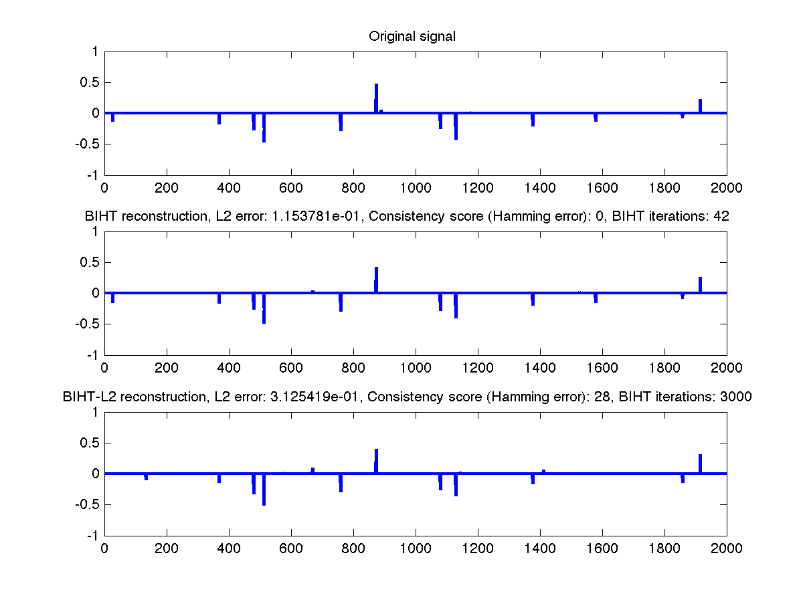

Contents
% This small matlab demo tests the Binary Iterative Hard Thresholding algorithm % developed in: % % "Robust 1-bit CS via binary stable embeddings" % L. Jacques, J. Laska, P. Boufounos, and R. Baraniuk % % More precisely, using paper notations, two versions of BIHT are tested % here on sparse signal reconstruction: % % * the standard BIHT associated to the (LASSO like) minimization of % % min || [ y o A(u) ]_- ||_1 s.t. ||u||_0 \leq K (1) % % * the (less efficient) BIHT-L2 related to % % min || [ y o A(u) ]_- ||^2_2 s.t. ||u||_0 \leq K (2) % % where y = A(x) := sign(Phi*x) are the 1-bit CS measurements of a initial % K-sparse signal x in R^N; Phi is a MxN Gaussian Random matrix of entries % iid drawn as N(0,1); [s]_-, equals to s if s < 0 and 0 otherwise, is applied % component wise on vectors; "o" is the Hadamard product such that % (u o v)_i = u_i*v_i for two vectors u and v. % % Considering the (sub) gradient of the minimized energy in (1) and (2), % BIHT is solved through the iteration: % % x^(n+1) = H_K( x^(n) - (1/M)*Phi'*(A(x^(n)) - y) ) % % while BIHT-L2 is solved through: % % x^(n+1) = H_K( x^(n) - (Y*Phi)' * [(Y*Phi*x^(n))]_-) ) % % with Y = diag(y), H_K(u) the K-term thresholding keeping the K % highest amplitude of u and zeroing the others. % % Authors: J. Laska, L. Jacques, P. Boufounos, R. Baraniuk % April, 2011
Important parameters and functions
N = 2000; % Signal dimension M = 500; % Number of measurements K = 15; % Sparsity % Negative function [.]_- neg = @(in) in.*(in <0);
Generating a unit K-sparse signal in R^N (canonical basis)
x0 = zeros(N,1); rp = randperm(N); x0(rp(1:K)) = randn(K,1); x0 = x0/norm(x0);
Gaussian sensing matrix and associated 1-bit sensing
Phi = randn(M,N); A = @(in) sign(Phi*in); y = A(x0);
Testing BIHT
maxiter = 3000; htol = 0; x = zeros(N,1); hd = Inf; ii=0; while(htol < hd)&&(ii < maxiter) % Get gradient g = Phi'*(A(x) - y); % Step a = x - g; % Best K-term (threshold) [trash, aidx] = sort(abs(a), 'descend'); a(aidx(K+1:end)) = 0; % Update x x = a; % Measure hammning distance to original 1bit measurements hd = nnz(y - A(x)); ii = ii+1; end % Now project to sphere x = x/norm(x); BIHT_nbiter = ii; BIHT_l2_err = norm(x0 - x)/norm(x0); BIHT_Hamming_err = nnz(y - A(x));
Testing BIHT-l2
maxiter = 3000; htol = 0; x_l2 = Phi'*y; x_l2 = x_l2/norm(x_l2); hd = Inf; % Update matrix (easier for computation) cPhi = diag(y)*Phi; tau = 1/M; ii=0; while (htol < hd) && (ii < maxiter) % Compute Gradient g = tau*cPhi'*neg(cPhi*x_l2); % Step a = x_l2 - g; % Best K-term (threshold) [trash, aidx] = sort(abs(a), 'descend'); a(aidx(K+1:end)) = 0; % Update x_l2 x_l2 = a; % Measure hammning hd = nnz(y - sign(cPhi*x)); ii = ii+1; end %Now project to sphere x_l2 = x_l2/norm(x_l2); BIHTl2_nbiter = ii; BIHTl2_l2_err = norm(x0 - x_l2)/norm(x0); BIHTl2_Hamming_err = nnz(y - A(x_l2));
Plotting results
figure; subplot(3,1,1); plot(x0, 'linewidth', 2); title('Original signal') ylim([-1 1]); subplot(3,1,2); plot(x, 'linewidth', 2); title(sprintf('BIHT reconstruction, L2 error: %e, Consistency score (Hamming error): %i, BIHT iterations: %i', ... BIHT_l2_err, BIHT_Hamming_err, BIHT_nbiter)); ylim([-1 1]); subplot(3,1,3); plot(x_l2, 'linewidth', 2); title(sprintf('BIHT-L2 reconstruction, L2 error: %e, Consistency score (Hamming error): %i, BIHT iterations: %i', ... BIHTl2_l2_err, BIHTl2_Hamming_err, BIHTl2_nbiter)); ylim([-1 1]);